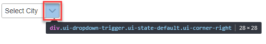
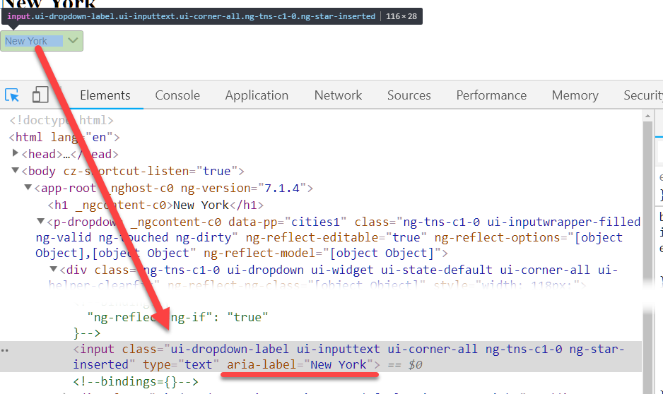

PrimeNG 元件很豐富沒錯，但是他所提供的原件在寫 E2E 測試時卻是一個讓人無法忍受的痛苦，主要原因是他為了畫面的呈現，使用各種非正統的方式呈現畫面，而 Dropdown 元件就是一個很標準的案例
基本型
我們先來準備一下基本的測試環境
1 | <p-dropdown |
1 | interface City { |
以上就是最基本 PrimeNG dropdown list 的用法，這時候如果要取得這一個 dropdown list 的方法，不外乎透過 id、name、CSS 的方式取得，其實我這裡介紹另外一種作法，data-attribute 的方式，寫法可以變成這樣
1 | <p-dropdown |
透過設定 data-pp (這裡可以自己取名字)，就可以賦予元件一個唯一值，但又不會占用 id/name 的情形，之後還可以透過 directive 的方式將這一個屬性取消掉
當設定完 data-attribute 後，E2E 要取得這元件就變得比較簡單了
1 | it('dropdown without editable', () => { |
程式碼說明
const dropdown = element(by.css('[data-pp=cities1]'));: 取得 dropdown 元件dropdown.click();點擊選單dropdown.all(by.tagName('li')): 找到顯示出來的選項，(沒錯，PrimeNG 是用 ul > li 的方式呈現).then((options: ElementFinder[]) => { options[1].click(); });由於dropdown.all()回傳是 promise 物件，所以需要接 then 才能做下一步的動作options會取回所有的選項，因為是陣列，可以使用 index 的方式選擇想要點選的項目
const dropdownSelected = dropdown.element(by.css('.ui-dropdown-label'));取得 dropdown 元件顯示結果的 DOM，這裡是顯示在一個label上，而這一個 label 會有.ui-dropdown-label'的 CSS Classexpect(dropdownSelected.getText()).toEqual('New York');既然可以取得顯示用的Label，當然可以透過getText()的方式做結果比對
這就是標準 不可編輯 dropdown 的 E2E 基本的測試寫法
延伸變化
由於 PrimeNG 的 dropdown 元件另外提供輸入的功能，可以透過 [editable]=true 的方式開啟
1 | <p-dropdown |
但這一個設定開啟時，上面所寫的 E2E 測試程式碼就會死掉，主要原因是呈現跟互動方式整個都不一樣了，要點出下拉選單，就無法直接點選 <p-dropdown> 本身，而需要點選旁邊的小圖示

1 | it('dropdown with editable', () => { |
程式碼說明
-
取得 dropdown 元件本體的作法是一樣的
-
const dropdownClicked = dropdown.element(by.css('.ui-dropdown-trigger'));取得可以點選的部分 (參閱上圖) -
dropdownClicked.click();點擊打開選單 -
透過 index 設定要選取的選項
-
const dropdownSelected = dropdown.element(by.css('.ui-dropdown-label'));取得顯示結果的元件-
這裡要留意的是，因為是
[editable]=true的關係，顯示結果的 Element 就在是Label了，而是Input
-
-
expect(dropdownSelected.getAttribute('aria-label')).toEqual('New York');比較結果
小結
以上就是 PrimeNG dropdown 元件兩種模式在 E2E 的基本寫法，當然這些動作應該要寫成一個 Page Object 模式的檔案，區隔出來好讓整個測試檔案看起來更乾淨。
延伸議題
為了讓輸出到 production 時，HTML 畫面上能減少一些不必要的東西，例如 data-pp，那可以怎麼處理，這裡就介紹一種方式，寫自訂 directive 來自我移除
Directive
1 | import { environment } from './../environments/environment'; |